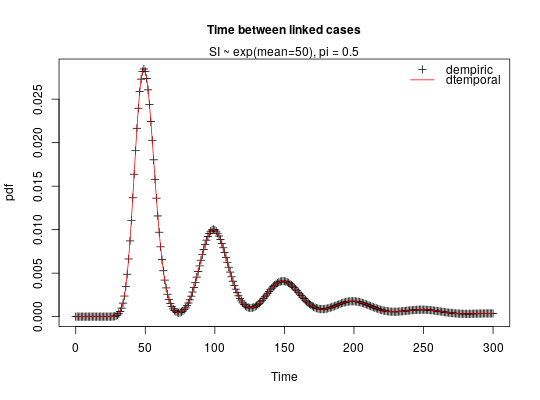
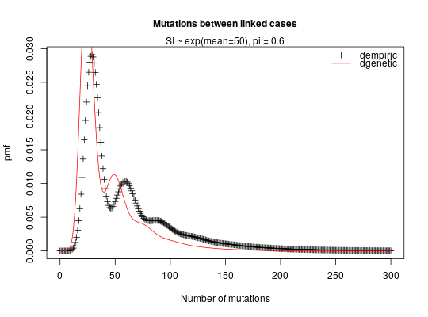

These functions compute the expected distributions of distances between pairs of cases given a case reporting probability 'pi'. Analytical results are used for some special cases, including:
dpaircase(x, type = c("temporal", "genetic", "spatial", "empiric"), gamma_shape, gamma_rate = 1, gamma_scale = 1/gamma_rate, poisson_rate, sd_spatial, p, pi, alpha = 0.001) dtemporal(x, shape, rate = 1, scale = 1/rate, pi, alpha = 0.001) dspatial(x, sd, pi, alpha = 0.001) dgenetic(x, gamma_shape, gamma_rate = 1, poisson_rate, pi, gamma_scale = 1/gamma_rate, alpha = 0.001) dempiric(p, pi, alpha = 0.001)
numeric vector providing the probability mass function, or
empirical frequencies, of pairwise distances.## COMPARE DEMPIRIC AND DTEMPORAL ## Note in this comparison we are not expecting to get exactly the same ## results since dempiric does the convolution between discretised gamma ## distributions whilst dtemporal does the convolution between gamma ## distributions. ## compute empirical distribution correponding to exponential(mean 50) mean_exp <- 50 x <- 0:300 reporting_rate <- 0.5 p <- dgamma(x, shape = mean_exp, rate = 1) ## computes pdf of a gamma distr with shape mean_exp and scale = rate = 1 ## (i.e. an exponential distr with mean mean_exp) ## use this as an empirical distribution to feed into dempiric empiric_exp_distr_r50 <- dpaircase(x, type = "empiric", p = p, pi = reporting_rate) temporal_distr_r50 <- dpaircase(x, type = "temporal", gamma_shape = mean_exp, gamma_rate = 1, pi = reporting_rate) ## compare the two correlation <- cor(empiric_exp_distr_r50, temporal_distr_r50) ## graphical comparison plot(x, empiric_exp_distr_r50, xlab = "Time", ylab = "pdf", main = "Time between linked cases", cex.main = 1, pch = 3)mtext("SI ~ exp(mean=50), pi = 0.5", side = 3)lines(x, temporal_distr_r50, col = "red")legend("topright", c("dempiric","dtemporal"), pch = c(3, -1), lwd = c(-1, 1), col = c("black","red"), bty = "n")## COMPARE DEMPIRIC AND DGENETIC ## compute empirical distribution correponding to ## an Exponential(mean 50)-Poisson(mean 0.6) mixture mean_exp <- 50 mutation_rate <- 0.6 x <- 0:300 reporting_rate <- 0.5 prob <- 1-mutation_rate/(mutation_rate+1) ## pmf of a negative binomial distr with parameters size and prob p <- dnbinom(x, size = mean_exp,prob = prob) ## use this as an empirical distribution to feed into dempiric empiric_exp_distr_r50 <- dpaircase(x, type = "empiric", p = p, pi = reporting_rate) genetic_distr_r50 <- dpaircase(x, type = "genetic", gamma_shape = mean_exp, gamma_rate = 1, poisson_rate = mutation_rate, pi = reporting_rate) ## compare the two correlation <- cor(empiric_exp_distr_r50, genetic_distr_r50) ## graphical comparison plot(x, empiric_exp_distr_r50, xlab = "Number of mutations", ylab = "pmf", main = "Mutations between linked cases", cex.main = 1, pch = 3)mtext("SI ~ exp(mean=50), pi = 0.6", side = 3)lines(x, genetic_distr_r50, col = "red")legend("topright", c("dempiric", "dgenetic"), pch = c(3, -1), lwd = c(-1, 1), col = c("black","red"), bty = "n")